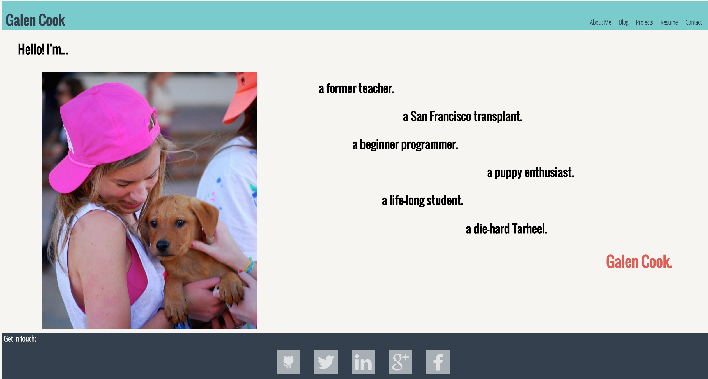

Since the very day I launched this site, part of me has been cringing. I know that the point was for it to document our learning as we progressed, but I also knew that it was destined to be transported directly from the 1990's. We were just going over basic HTML/CSS stuff with manual positioning, and the point was to get our feet wet. And so I practiced and tinkered and cursed positioning and tinkered some more, but I knew that my site looked dreadful.
Now, I'm not a web designer by any means. I don't have an eye for aesthetics, and haven't ever been known as the "creative type". But I had done some work with Bootstrap, so I knew there was an easier way. I kept "planning on" working my site into a Bootstrap framework, but as the weeks went on it kept feeling like a bigger and bigger endeavor to undertake. (Lazy, I know.) Luckily, during this final week of Phase 0 (onsite starts on Monday, y'all!), DBC included a major website revamp in our curriculum. The time had come.
There were a few major things I wanted to accomplish with this redesign:
So, with those things in mind I got to work. In a fortunate turn of events, my boyfriend was gone all this week, which allowed me to turn into a web gremlin for a couple of days. I scoured blogs and guides, yelled at my computer, did a TON of trial and error, and ate a lot of beef jerky, and finally ended up with something I'm way happier with.
I say "happier", because I'm well aware that it's still not perfect. I still think some of the pages are too busy/juvenile (I'm toying around with the idea of a monochromatic color scheme?) and I really want to incorporate some JavaScript/jQuery, but for now, I'm pleased. If there's one thing I've learned from diving into tech it's that everything is a work in progress. If I waited until I felt something was "finished" before showing it to anyone, I'd be really hurting for products. So, until next time, don't hesitate to get in touch with any feedback!